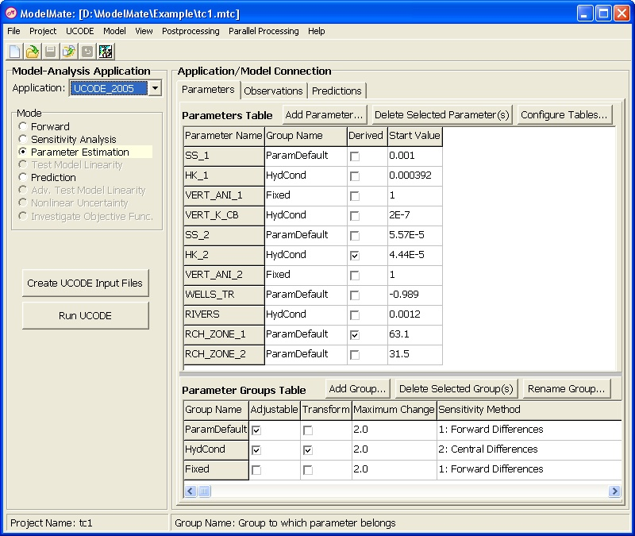

ModelMate is a graphical user interface (GUI) designed to facilitate model analysis by software applications that invoke model simulations as external processes. This version of ModelMate supports one model-analysis program, UCODE, and one model software program, MODFLOW–2005. ModelMate can be used to prepare input files for UCODE_2005 or UCODE_2014 (UCODE), run UCODE, and display analysis results. ModelMate stores data to define parameters, observations, predictions, prior information, derived parameters, and various settings to control UCODE execution. A link to the GW_Chart graphing program facilitates visual interpretation of results. ModelMate includes capabilities for organizing directories used with the parallel-processing capabilities of UCODE and for maintaining files in those directories to be identical to a set of files in a master directory. The interface itself can be configured to allow users to define attributes of parameters, observations, predictions, and prior-information items either by groups or by individual items and to generate UCODE input accordingly. ModelMate can be used on its own or in conjunction with ModelMuse, a graphical user interface for MODFLOW–2005. ModelMate is designed to be enhanced to support other model-analysis software and other simulation-model software.
|  |
Support is provided for correcting bugs and clarification of how ModelMate is intended to work.
For support, contact:
If you would like to be notified by email when each new version of ModelMate is released, please send your request by email to Ned Banta, .
Point of contact for ModelMate -- Ned Banta